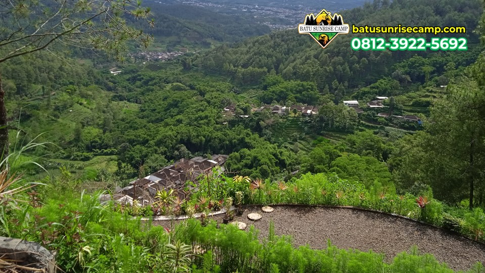
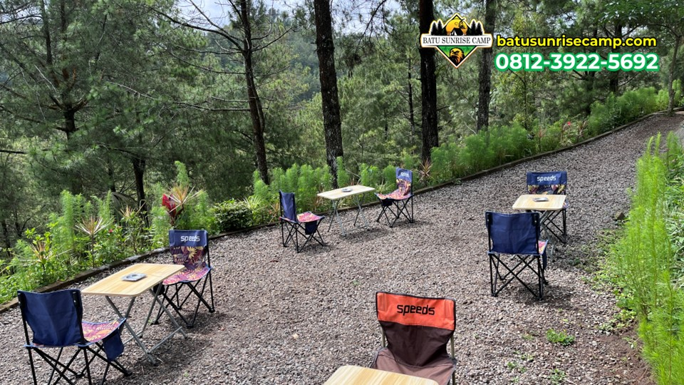
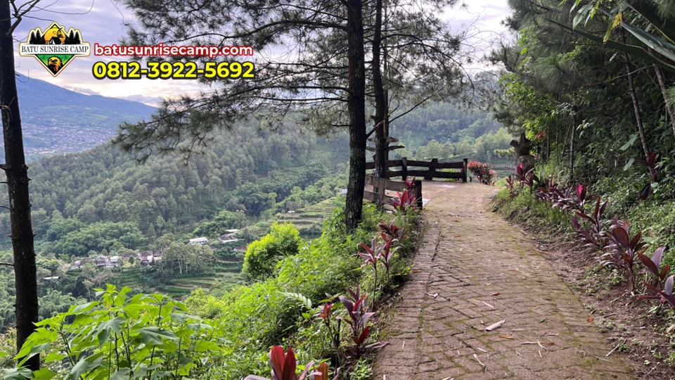

Artikel Terbaru
Baca tips camping, panduan wisata, dan informasi terbaru dari Batu Sunrise Camp.

KesehatanCara Mengatasi Penyakit Ketinggian (Altitude Sickness) Saat Camping di Pegunungan
Pusing dan mual saat berkemah di tempat tinggi? Waspadai gejala penyakit ketinggian dan ketahui cara penanganan pertamanya.
Baca Selengkapnya Review
Review
Review Lengkap Fasilitas Batu Sunrise Camp, Surganya Para Campers di Malang
Bongkar tuntas fasilitas unggulan yang menjadikan Batu Sunrise Camp sebagai destinasi kemah favorit wisatawan dari berbagai kota.
Baca Selengkapnya Informasi
Informasi
Panduan Lengkap Menyewa Campervan untuk Camping di Batu Malang
Ingin merasakan liburan nomaden dengan campervan? Simak panduan lengkap menyewa dan memilih lokasi campervan di Batu.
Baca Selengkapnya
Rekomendasi5 Rekomendasi Tempat Nongkrong Asik Setelah Camping di Batu
Lelah setelah berkemah? Bersantai sejenak di kafe-kafe estetik sekitar Batu ini sebelum kembali ke rutinitas harian Anda.
Baca Selengkapnya Tips
Tips
Menjaga Kebersihan Tenda: Tips Ampuh Usir Lembap dan Bau Apek
Tenda yang lembap bisa merusak mood liburan. Terapkan tips ini agar bagian dalam tenda Anda selalu kering dan wangi.
Baca Selengkapnya Pengetahuan
Pengetahuan
Manfaat Api Unggun Selain untuk Menghangatkan Badan
Api unggun punya fungsi lebih dari sekadar perapian. Ketahui manfaat tersembunyi dari menyalakan api saat di alam bebas.
Baca Selengkapnya Tips
Tips
Aturan Membawa Makanan ke Camping Ground agar Terhindar dari Binatang Liar
Jangan sampai tenda Anda diacak-acak monyet atau serangga. Ketahui cara aman menyimpan bekal makanan di alam terbuka.
Baca Selengkapnya Persiapan
Persiapan
5 Kesalahan Umum Pendaki Pemula Saat Camping di Dataran Tinggi
Baru pertama kali kemah di pegunungan? Hindari 5 kesalahan fatal ini agar pengalaman outdoor Anda tetap aman dan menyenangkan.
Baca Selengkapnya
TipsTips Memilih Sleeping Bag untuk Camping di Udara Dingin Batu Malang
Tidur nyenyak di alam bebas sangat bergantung pada kantong tidur Anda. Ketahui cara memilih sleeping bag terbaik di sini.
Baca Selengkapnya
Aktivitas
Aktivitas Pagi Seru yang Wajib Dicoba Saat Camping di Batu Malang
Udara pagi adalah waktu terbaik untuk eksplorasi. Simak rekomendasi kegiatan seru menyambut pagi di area perkemahan.
Baca Selengkapnya5 Persiapan Penting Sebelum Camping Bareng Teman di Batu Malang
Camping beramai-ramai tentu seru, tapi butuh koordinasi. Cek panduan ini agar liburan bareng sahabat di Batu berjalan lancar.
Baca Selengkapnya
Tips
Mengenal Etika dan Aturan Dasar Saat Berkunjung ke Camping Ground
Jadilah pekemah yang bijak! Ketahui etika dasar dan aturan tak tertulis saat berada di area perkemahan alam terbuka.
Baca Selengkapnya
Keluarga
5 Alasan Mengapa Batu Sunrise Camp Cocok untuk Liburan Keluarga dan Ramah Anak
Mencari tempat liburan akhir pekan yang aman untuk si kecil? Temukan alasan mengapa camping di sini sangat ramah anak.
Baca Selengkapnya
Tips
Cara Mengatasi Hawa Dingin Ekstrem Saat Berkemah di Batu Malang
Jangan sampai hipotermia mengganggu liburan Anda. Terapkan cara ampuh ini untuk melawan suhu dingin pegunungan.
Baca Selengkapnya
Informasi
Sewa Alat Camping di Batu Malang Terlengkap dan Murah
Tidak punya tenda? Jangan khawatir! Temukan rekomendasi tempat sewa alat camping murah dan lengkap di Batu Malang.
Baca SelengkapnyaSpot Menikmati Sunrise Terbaik Saat Camping di Batu Malang
Awali pagi Anda dengan pemandangan magis. Inilah rekomendasi spot terbaik untuk menikmati matahari terbit di kawasan Batu.
Baca Selengkapnya
Tips
Tips Aman dan Nyaman Camping Saat Musim Hujan di Batu Malang
Jangan biarkan hujan merusak liburan! Simak tips jitu berkemah di musim hujan agar tetap hangat, kering, dan seru.
Baca Selengkapnya Rekomendasi
Rekomendasi
5 Spot Foto Instagramable Paling Memukau di Batu Sunrise Camp
Penuhi feed media sosial Anda dengan foto-foto estetik! Ini dia spot terbaik untuk berfoto di area Batu Sunrise Camp.
Baca Selengkapnya Persiapan
Persiapan
Rekomendasi Pakaian yang Nyaman dan Aman untuk Camping di Batu Malang
Persiapkan pakaian yang tepat agar Anda tetap hangat dan nyaman saat menikmati udara pegunungan Batu Malang.
Baca Selengkapnya Tips
Tips
Tips Membuat Api Unggun yang Aman Saat Camping di Batu Malang
Api unggun adalah bagian tak terpisahkan dari camping. Ketahui cara membuatnya dengan aman dan ramah lingkungan.
Baca Selengkapnya Tips
Tips
Cara Memilih Tenda yang Tepat untuk Camping di Udara Dingin Batu Malang
Jangan salah pilih tenda! Ketahui spesifikasi tenda yang paling pas untuk menahan hawa dingin pegunungan Batu Malang.
Baca Selengkapnya Persiapan
Persiapan
Pilihan Makanan Praktis dan Menghangatkan untuk Camping di Batu Malang
Bingung mau masak apa saat kemah? Berikut rekomendasi bekal makanan lezat, praktis, dan cocok untuk cuaca dingin.
Baca Selengkapnya Wisata
Wisata
5 Destinasi Wisata Alam Menarik di Sekitar Area Camping Batu Malang
Maksimalkan liburan Anda! Jelajahi berbagai destinasi wisata alam memukau yang berdekatan dengan area camping di Batu Malang.
Baca Selengkapnya Tips
Tips
Manfaat Camping di Batu Malang untuk Healing dan Mengurangi Stres
Lepaskan beban pikiran sejenak. Ketahui bagaimana segarnya udara Batu Malang bisa menjadi terapi healing terbaik untuk Anda.
Baca Selengkapnya
Persiapan
Daftar Peralatan Camping yang Wajib Dibawa saat Berkemah di Batu Malang
Suhu dingin di Batu Malang butuh persiapan khusus. Cek daftar barang bawaan wajib agar kemah Anda tetap hangat dan aman.
Baca SelengkapnyaPanduan Rute dan Akses Menuju Tempat Camping di Batu Malang
Jangan sampai tersesat! Simak panduan rute jalan terbaik menuju kawasan camping favorit di Batu Malang.
Baca Selengkapnya
Rekomendasi
Rekomendasi Tempat Camping di Batu Malang dengan View Terbaik
Temukan pilihan tempat camping di Batu Malang yang menyajikan pemandangan alam memukau untuk liburan Anda.
Baca Selengkapnya
Informasi
Daftar Harga Paket Camping Batu Malang Terbaru 2026
Informasi lengkap mengenai harga paket camping Batu Malang dengan berbagai fasilitas menarik dan terjangkau.
Baca Selengkapnya
Tips
Tips Camping di Batu Malang agar Pengalaman Makin Berkesan
Panduan lengkap untuk mempersiapkan camping di kawasan Batu Malang agar liburan Anda aman, nyaman, dan tak terlupakan.
Baca Selengkapnya
Rekomendasi
Rekomendasi Spot Camping Terbaik di Kawasan Batu Malang
Temukan spot-spot camping terbaik di kawasan Batu Malang yang menawarkan pemandangan indah dan fasilitas terbaik.
Baca SelengkapnyaPanduan Camping Keluarga di Batu Sunrise Camp
Camping bersama keluarga semakin menyenangkan di Batu Sunrise Camp dengan fasilitas ramah anak.
Baca Selengkapnya
Aktivitas
Aktivitas Seru yang Bisa Dilakukan saat Camping di Batu
Selain menikmati pemandangan, ada banyak aktivitas menarik yang bisa dilakukan saat camping di kawasan Batu.
Baca Selengkapnya
Wisata
Menikmati Keindahan Langit Malam saat Camping di Batu Malang
Camping di ketinggian memberikan pengalaman menakjubkan menyaksikan langit malam bertabur bintang.
Baca Selengkapnya